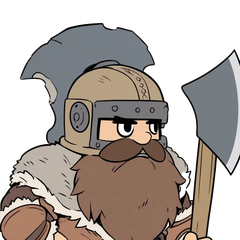
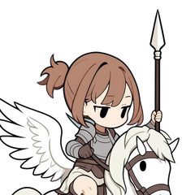

遊び方ガイドGuide玩法指南玩法指南플레이 가이드Guía de juegoРуководствоGuia de jogo
町の取り方、兵種と聖女の性能、陣形と作戦、戦闘の数字の下に出るバフ・デバフの意味をまとめました。
How towns work, class and saint stats, formations and tactics, and what the buff/debuff labels in battle mean.
汇总了城镇的夺取方法、兵种与圣女的性能、阵形与作战，以及战斗中伤害数字下方显示的增益・减益的含义。
彙整了城鎮的奪取方式、兵種與聖女的性能、陣形與作戰，以及戰鬥中傷害數字下方顯示的增益・減益的意義。
마을을 차지하는 법, 병종과 성녀의 성능, 진형과 작전, 전투 숫자 아래에 나오는 버프·디버프의 의미를 정리했어요.
Cómo tomar pueblos, las estadísticas de los tipos y de las santas, las formaciones y tácticas, y qué significan las mejoras y debilitaciones que aparecen bajo los números de daño en combate.
Как захватывать города, характеристики классов и святых, построения и тактики, а также что значат баффы и дебаффы, которые появляются под цифрами урона в бою.
Aqui você encontra como conquistar cidades, os atributos das classes e das Santas, formações e táticas, e o significado dos buffs e debuffs que aparecem sob os números do combate.
町の取り方Taking towns夺取城镇奪取城鎮마을 차지하기Tomar pueblosЗахват городовComo conquistar cidades
- 町に部隊を入れて、しばらくいると自分の町になります。部隊を多く入れるほど早く取れます。敵の部隊が中にいる間は取れません。
- 補給：自分の城から、つながった自分の町を伝って補給が届きます。補給の届く所では速く歩け、疲れにくくなります。届かない所に長くいると、スタミナが下がり続けます。
- 挟む：補給の切れた敵の町を、自分の町で両側から挟むと、しばらくして自分の町に寝返ります。
- 中継の町を奪うと、その先の敵の町は補給が切れ、やがて中立に戻ります。
- 自分の町の中では受けるダメージが減り、体力も早く回復します。
- Keep a squad inside a town for a while to take it. More squads take it faster. You can't take it while an enemy squad is inside.
- Supply runs from your castle through connected towns. Inside supply you move faster and tire less; stay outside too long and stamina keeps dropping.
- Pincer: an enemy town cut off from supply and flanked by your towns soon switches to your side.
- Take a relay town and the enemy towns beyond it lose supply and soon turn neutral.
- Inside your own towns you take less damage and heal faster.
- 让部队进入城镇并停留一段时间，城镇就会归我方所有。进入的部队越多，夺取越快。敌方部队在城内时无法夺取。
- 补给：补给从我方城堡出发，沿着相连的我方城镇送达。在补给范围内行军更快，也更不容易疲劳。在补给不到的地方停留太久，耐力会持续下降。
- 夹击：用我方城镇从两侧夹住断了补给的敌方城镇，过一会儿它就会倒戈到我方。
- 夺取中继城镇后，其后方的敌方城镇会断补给，不久便恢复中立。
- 在我方城镇内受到伤害会减少，体力也回复得更快。
- 讓部隊進入城鎮並停留一段時間，城鎮就會歸我方所有。進入的部隊越多，奪取越快。敵方部隊在城內時無法奪取。
- 補給：補給從我方城堡出發，沿著相連的我方城鎮送達。在補給範圍內行軍更快，也比較不容易疲勞。在補給不到的地方停留太久，耐力會持續下降。
- 夾擊：用我方城鎮從兩側夾住斷了補給的敵方城鎮，過一陣子它就會倒戈到我方。
- 奪取中繼城鎮後，其後方的敵方城鎮會斷補給，不久便恢復中立。
- 在我方城鎮內受到傷害會減少，體力也回復得更快。
- 마을에 부대를 넣고 잠시 있으면 아군 마을이 돼요. 부대를 많이 넣을수록 빨리 차지할 수 있어요. 적 부대가 안에 있는 동안은 차지할 수 없어요.
- 보급: 아군 성에서 이어진 아군 마을을 따라 보급이 닿아요. 보급이 닿는 곳에서는 빨리 걷고 덜 지쳐요. 닿지 않는 곳에 오래 있으면 스태미나가 계속 떨어져요.
- 협공: 보급이 끊긴 적 마을을 아군 마을로 양쪽에서 끼우면, 잠시 뒤 아군 마을로 넘어와요.
- 중계 마을을 빼앗으면 그 너머의 적 마을은 보급이 끊겨 머지않아 중립으로 돌아가요.
- 아군 마을 안에서는 받는 피해가 줄고 체력도 빨리 회복돼요.
- Mete un escuadrón en un pueblo y, tras un rato, será tuyo. Cuantos más escuadrones metas, antes lo tomarás. No se puede tomar mientras haya un escuadrón enemigo dentro.
- Suministro: llega desde tu castillo pasando por tus pueblos conectados. Donde llega el suministro caminas más rápido y te cansas menos. Si pasas mucho tiempo donde no llega, el aguante no deja de bajar.
- Pinza: si encierras por ambos lados con tus pueblos un pueblo enemigo sin suministro, al poco tiempo se pasa a tu bando.
- Si tomas un pueblo de enlace, los pueblos enemigos que hay más allá se quedan sin suministro y acaban volviendo a ser neutrales.
- Dentro de tus pueblos recibes menos daño y recuperas HP más rápido.
- Введите отряд в город и задержитесь там — город станет вашим. Чем больше отрядов внутри, тем быстрее захват. Пока внутри вражеский отряд, захватить город нельзя.
- Снабжение: идёт из вашего замка через связанные между собой ваши города. Там, куда доходит снабжение, отряды ходят быстрее и меньше устают. Если долго оставаться вне снабжения, выносливость постоянно падает.
- Клещи: если вражеский город без снабжения зажат вашими городами с двух сторон, через некоторое время он переходит на вашу сторону.
- Захватите связующий город — и вражеские города за ним лишатся снабжения и со временем снова станут нейтральными.
- В своих городах отряды получают меньше урона и быстрее восстанавливают здоровье.
- Coloque um esquadrão numa cidade e, depois de um tempo, ela passa a ser sua. Quanto mais esquadrões dentro, mais rápido. Não é possível tomá-la enquanto houver um esquadrão inimigo dentro.
- Abastecimento: o abastecimento sai do seu castelo e segue pelas suas cidades conectadas. Onde ele chega, você anda mais rápido e se cansa menos. Se ficar muito tempo fora do alcance, o vigor cai sem parar.
- Pinça: uma cidade inimiga sem abastecimento, cercada dos dois lados por cidades suas, passa para o seu lado depois de um tempo.
- Tome uma cidade de ligação e as cidades inimigas além dela perdem o abastecimento e logo voltam a ser neutras.
- Dentro das suas cidades, o dano recebido diminui e a vida se recupera mais rápido.
兵種Classes兵种兵種병종TiposКлассыClasses
1 部隊は聖女（隊長）と兵 4 人の 5 人です。数字はレベル 1 の値で、棒は全兵種・聖女の中でいちばん高い値との比べです。
A squad is a saint (leader) plus four soldiers. Numbers are level 1; bars compare against the highest value across all classes and saints.
1 支部队由圣女（队长）与 4 名士兵共 5 人组成。数值为等级 1 时的数值，条形图是与全部兵种・圣女中最高值的比较。
1 支部隊由聖女（隊長）與 4 名士兵共 5 人組成。數值為等級 1 時的數值，長條圖是與所有兵種・聖女中最高值的比較。
부대 1개는 성녀(대장)와 병사 4명, 모두 5명이에요. 숫자는 레벨 1의 값이고, 막대는 모든 병종·성녀 중 가장 높은 값과 비교한 거예요.
Cada escuadrón tiene 5 miembros: una santa (líder) y 4 soldados. Los números son los de nivel 1, y las barras comparan con el valor más alto entre todos los tipos y santas.
В отряде 5 человек: святая (командир) и 4 бойца. Цифры даны для 1-го уровня, а полосы показывают сравнение с самым высоким значением среди всех классов и святых.
Cada esquadrão tem 5 membros: uma Santa (líder) e 4 soldados. Os números são do nível 1, e as barras comparam com o maior valor entre todas as classes e Santas.
| 兵種Class兵种兵種병종TipoКлассClasse | 体力HP体力體力체력HPОЗPV | 攻撃ATK攻击攻擊공격AtaqueАТКATQ | 守りDEF防守防守수비DefensaЗАЩDEF | 魔力MAG魔力魔力마력MagiaМАГMAG | 魔守RES魔防魔防마방Res. mágicaСОПRES | 速さSPD速度速度속도VelocidadСКРVEL |
|---|---|---|---|---|---|---|
兵士Soldier士兵士兵병사SoldadoСолдатSoldado 近接Melee近战近戰근접Cuerpo a cuerpoБлижний бойCorpo a corpo 前に立って攻める。1 回の戦闘で 3 回攻撃する（ほかの兵は 2 回）Stands in front and hits hard. Attacks 3 times per battle (others attack twice).站在前方进攻。在 1 次战斗中攻击 3 次（其他士兵为 2 次）站在前方進攻。在 1 次戰鬥中攻擊 3 次（其他士兵為 2 次）앞에 서서 공격해요. 전투 1번에 3번 공격해요 (다른 병사는 2번)Lucha en primera línea. Ataca 3 veces por combate (los demás soldados, 2)Стоит впереди и атакует. За один бой атакует 3 раза (остальные бойцы — 2)Fica na linha de frente e ataca. Ataca 3 vezes por combate (os outros soldados, 2) | 62 | 19 | 20 | 0 | 9 | 5 |
重装兵Heavy Soldier重装兵重裝兵중장병Soldado pesadoЛатникSoldado pesado 近接Melee近战近戰근접Cuerpo a cuerpoБлижний бойCorpo a corpo 固く守り、弱った味方をかばう（同じ部隊の傷ついた兵への近接・矢を代わりに受ける）。足は遅いTough and protective: takes melee and arrow hits for wounded squadmates. Slow.坚固防守，保护虚弱的队友（代替同部队中受伤的士兵承受近战・箭矢攻击）。移动缓慢堅固防守，保護虛弱的隊友（代替同部隊中受傷的士兵承受近戰・箭矢攻擊）。移動緩慢단단히 지키고 약해진 아군을 감싸요 (같은 부대의 다친 병사 대신 근접·화살 공격을 받아요). 이동이 느려요Defensor duro, protege a aliados débiles (recibe en su lugar los golpes cuerpo a cuerpo y las flechas dirigidos a los soldados heridos de su escuadrón). Es lentoКрепкий защитник, прикрывает ослабших союзников (принимает на себя удары ближнего боя и стрелы, направленные в раненых бойцов своего отряда). МедлительныйDefesa sólida; protege aliados enfraquecidos (recebe no lugar dos soldados feridos do mesmo esquadrão os ataques corpo a corpo e as flechas). É lento | 90 | 11 | 26 | 0 | 14 | 3 |
弓使いArcher弓手弓手궁수ArqueroЛучникArqueiro 矢Arrow箭箭화살FlechaСтрелыFlecha 後ろから矢で撃つShoots arrows from the back line.从后方放箭從後方放箭뒤에서 화살을 쏴요Dispara flechas desde atrásСтреляет из лука из задних рядовAtira flechas da retaguarda | 54 | 19 | 10 | 0 | 11 | 6 |
魔法使いMage法师法師마법사MagoМагMago 魔法Magic魔法魔法마법MagiaМагияMagia 範囲の魔法で撃つ（まわりの敵にも半分）。鎧の硬い相手に強いArea magic (half damage to nearby enemies too). Good against heavy armor.施放范围魔法（周围的敌人也会受到一半伤害）。对护甲坚硬的敌人很有效施放範圍魔法（周圍的敵人也會受到一半傷害）。對護甲堅硬的敵人很有效범위 마법을 쏴요 (주변 적에게도 절반). 단단한 갑옷을 입은 상대에게 강해요Lanza magia en área (la mitad del daño a los enemigos cercanos). Fuerte contra rivales con armadura duraБьёт магией по площади (стоящие рядом враги получают половину урона). Силён против врагов в тяжёлой бронеAtaca com magia em área (metade do dano também nos inimigos ao redor). Forte contra alvos de armadura pesada | 50 | 0 | 7 | 18 | 14 | 6 |
シーフThief盗贼盜賊시프LadrónВорLadrão 近接Melee近战近戰근접Cuerpo a cuerpoБлижний бойCorpo a corpo 足が速く、攻撃が当たると資金を盗むVery fast. Steals gold when its attacks land.移动迅速，攻击命中时会偷取资金移動迅速，攻擊命中時會偷取資金이동이 빠르고, 공격이 맞으면 자금을 훔쳐요Rápido; roba oro cuando sus ataques aciertanБыстрый; попадая атакой, крадёт золотоMuito rápido; rouba ouro quando seus ataques acertam | 66 | 13 | 15 | 0 | 8 | 11 |
ヒーラーHealer治疗师治療師힐러SanadorЦелительCurandeiro 魔法Magic魔法魔法마법MagiaМагияMagia 同じ部隊の傷ついた味方を回復するHeals wounded allies in the squad.为同部队中受伤的友军回复為同部隊中受傷的友軍回復같은 부대의 다친 아군을 회복해요Cura a los aliados heridos de su escuadrónЛечит раненых союзников в своём отрядеCura aliados feridos do mesmo esquadrão | 52 | 0 | 9 | 8 | 15 | 6 |
 ドワーフDwarf矮人矮人드워프EnanoГномAnão 近接 ・ 山が得意Melee · Mountain expert近战 ・ 擅长山地近戰 ・ 擅長山地근접 · 산에 강함Cuerpo a cuerpo · Experto en montañaБлижний бой · мастер горCorpo a corpo · Especialista em montanha 山が得意。山では速く進み、奇襲できるMountain expert: moves fast and ambushes in mountains.擅长山地。在山地行进快速，并能发动奇袭擅長山地。在山地行進快速，並能發動奇襲산에 강해요. 산에서 빠르게 이동하고 기습할 수 있어요Experto en montaña: en ella avanza rápido y puede tender emboscadasМастер гор: в горах быстро продвигается и может устраивать засадыEspecialista em montanha: anda rápido e pode emboscar nas montanhas | 46 | 18 | 15 | 0 | 7 | 4 |
エルフElf精灵精靈엘프ElfoЭльфElfo 矢 ・ 森が得意Arrow · Forest expert箭 ・ 擅长森林箭 ・ 擅長森林화살 · 숲에 강함Flecha · Experto en bosqueСтрелы · мастер лесаFlecha · Especialista em floresta 森が得意。森では速く進み、奇襲できる。矢で撃つForest expert: moves fast and ambushes in forests. Shoots arrows.擅长森林。在森林行进快速，并能发动奇袭。用箭射击擅長森林。在森林行進快速，並能發動奇襲。用箭射擊숲에 강해요. 숲에서 빠르게 이동하고 기습할 수 있어요. 화살을 쏴요Experto en bosque: en él avanza rápido y puede tender emboscadas. Dispara flechasМастер леса: в лесу быстро продвигается и может устраивать засады. Стреляет из лукаEspecialista em floresta: anda rápido e pode emboscar nas florestas. Atira flechas | 35 | 12 | 6 | 0 | 7 | 7 |
マーメイドMermaid人鱼人魚머메이드SirenaРусалкаSereia 魔法 ・ 水が得意Magic · Water expert魔法 ・ 擅长水域魔法 ・ 擅長水域마법 · 물에 강함Magia · Experta en aguaМагия · мастер водыMagia · Especialista em água 水が得意。水では速く進み、奇襲できる。範囲の魔法で撃つWater expert: moves fast and ambushes in water. Area magic.擅长水域。在水中行进快速，并能发动奇袭。施放范围魔法擅長水域。在水中行進快速，並能發動奇襲。施放範圍魔法물에 강해요. 물에서 빠르게 이동하고 기습할 수 있어요. 범위 마법을 쏴요Experta en agua: en ella avanza rápido y puede tender emboscadas. Lanza magia en áreaМастер воды: в воде быстро продвигается и может устраивать засады. Бьёт магией по площадиEspecialista em água: anda rápido e pode emboscar na água. Ataca com magia em área | 32 | 0 | 5 | 12 | 9 | 7 |
 ペガサス騎士Pegasus Knight天马骑士天馬騎士페가수스 기사Caballero pegasoРыцарь пегасаCavaleiro Pégaso 近接Melee近战近戰근접Cuerpo a cuerpoБлижний бойCorpo a corpo 森・山・水も速く越えるCrosses forest, mountain and water quickly.也能快速越过森林・山地・水域也能快速越過森林・山地・水域숲·산·물도 빠르게 건너요Cruza rápido también bosques, montañas y aguaБыстро преодолевает и лес, и горы, и водуAtravessa rápido florestas, montanhas e água | 66 | 19 | 15 | 0 | 10 | 10 |
聖女と必殺技Saints and special moves圣女与必杀技聖女與必殺技성녀와 필살기Santas y especialesСвятые и суперприёмыSantas e Especiais
聖女は部隊の隊長で、どの聖女も前に出て戦います。倒されると部隊は弱くなり、崩れやすくなります。必殺技は時間でたまり、宝石のボタンで撃てます。そばにいる聖女の必殺技は続けて撃てます（連携必殺技）。
Saints lead their squads and fight on the front line; if a saint falls, the squad weakens. Special moves charge over time and fire from the gem button. Saints standing close together can chain their specials.
圣女是部队的队长，每位圣女都会站上前线作战。圣女被击倒后，部队会变弱，更容易溃散。必杀技会随时间积累，可用宝石按钮发动。附近圣女的必杀技可以接连发动（连携必杀技）。
聖女是部隊的隊長，每位聖女都會站上前線作戰。聖女被擊倒後，部隊會變弱，更容易潰散。必殺技會隨時間累積，可用寶石按鈕發動。附近聖女的必殺技可以接連發動（連攜必殺技）。
성녀는 부대의 대장이며, 모든 성녀가 앞에 나서서 싸워요. 성녀가 쓰러지면 부대가 약해지고 무너지기 쉬워져요. 필살기는 시간이 지나면 차오르고, 보석 버튼으로 쓸 수 있어요. 가까이 있는 성녀의 필살기는 이어서 쓸 수 있어요 (연계 필살기).
Las santas son las líderes de sus escuadrones, y todas luchan en primera línea. Si una cae, su escuadrón se debilita y se desmorona con más facilidad. Los especiales se cargan con el tiempo y se lanzan con el botón de la gema. Los especiales de santas que estén cerca se pueden lanzar seguidos (Especial en cadena).
Святая — командир отряда, и все святые сражаются в первых рядах. Если святая падёт, отряд слабеет и легче обращается в бегство. Суперприём копится со временем и запускается кнопкой с самоцветом. Суперприёмы святых, стоящих рядом, можно применить один за другим (цепной суперприём).
A Santa é a líder do esquadrão, e todas as Santas lutam na linha de frente. Se ela cair, o esquadrão fica mais fraco e se desfaz com mais facilidade. O Especial carrega com o tempo e é usado pelo botão de gema. Santas próximas umas das outras podem usar seus Especiais em sequência (Especial em cadeia).
| 聖女Saint圣女聖女성녀SantaСвятаяSanta | 体力HP体力體力체력HPОЗPV | 攻撃ATK攻击攻擊공격AtaqueАТКATQ | 守りDEF防守防守수비DefensaЗАЩDEF | 魔力MAG魔力魔力마력MagiaМАГMAG | 魔守RES魔防魔防마방Res. mágicaСОПRES | 速さSPD速度速度속도VelocidadСКРVEL |
|---|---|---|---|---|---|---|
ルクス（光）Lux (Light)露克丝（光）露克絲（光）룩스 (빛)Lux (Luz)Люкс (свет)Lux (Luz) 必殺技 聖域の宣言：自分のものでない町を 1 つ、その場で自分の町にするSpecial: Holy Ground Call — Instantly claims one town that isn't yours.必杀技 圣域宣言：将 1 座不属于我方的城镇当场变为我方城镇必殺技 聖域宣言：將 1 座不屬於我方的城鎮當場變為我方城鎮필살기 성역의 선언: 아군 것이 아닌 마을 1곳을 그 자리에서 아군 마을로 만들어요Especial Proclama del Santuario: convierte al instante en tuyo 1 pueblo que no te pertenezcaСуперприём Зов святой земли: мгновенно делает вашим один город, который вам не принадлежитEspecial Proclamação do Santuário: transforma na hora uma cidade que não é sua em cidade sua | 64 | 0 | 6 | 13 | 16 | 5 |
アイギス（盾）Aegis (Shield)艾吉丝（盾）艾吉絲（盾）아이기스 (방패)Aegis (Escudo)Эгида (щит)Aegis (Escudo) 必殺技 パーフェクトパリィ：自分の部隊が、次の戦闘で近接の攻撃を受けないSpecial: Perfect Parry — Her squad takes no melee hits in the next battle.必杀技 完美格挡：自己的部队在下一次战斗中不会受到近战攻击必殺技 完美格擋：自己的部隊在下一次戰鬥中不會受到近戰攻擊필살기 퍼펙트 패리: 자기 부대가 다음 전투에서 근접 공격을 받지 않아요Especial Parada perfecta: su escuadrón no recibe ataques cuerpo a cuerpo en el siguiente combateСуперприём Идеальное парирование: в следующем бою её отряд не получает ударов ближнего бояEspecial Aparo Perfeito: o próprio esquadrão não recebe ataques corpo a corpo no próximo combate | 92 | 0 | 14 | 17 | 14 | 8 |
ミリア（癒し）Milia (Healing)米莉娅（治愈）米莉婭（治癒）미리아 (치유)Milia (Sanación)Милия (исцеление)Milia (Cura) 必殺技 ヒーリングサークル：範囲の味方の体力を回復Special: Healing Circle — Heals allies in an area.必杀技 治愈之环：回复范围内友军的体力必殺技 治癒之環：回復範圍內友軍的體力필살기 힐링 서클: 범위 안 아군의 체력을 회복해요Especial Círculo curativo: recupera el HP de los aliados en un áreaСуперприём Круг исцеления: восстанавливает здоровье союзникам в областиEspecial Círculo de Cura: recupera a vida dos aliados na área | 64 | 0 | 6 | 13 | 16 | 5 |
ステラ（星）Stella (Stars)丝黛拉（星）絲黛拉（星）스텔라 (별)Stella (Estrellas)Стелла (звёзды)Stella (Estrelas) 必殺技 極光の星槌：目の前の範囲の敵に大きなダメージSpecial: Aurora Star Hammer — Big damage to enemies right in front.必杀技 极光星锤：对正前方范围内的敌人造成大量伤害必殺技 極光星錘：對正前方範圍內的敵人造成大量傷害필살기 극광의 별망치: 눈앞 범위의 적에게 큰 피해Especial Martillo Estelar de la Aurora: gran daño a los enemigos del área que tiene delanteСуперприём Звёздный молот Авроры: большой урон врагам в области прямо перед нейEspecial Martelo Estelar da Aurora: grande dano aos inimigos na área logo à frente | 82 | 0 | 11 | 17 | 12 | 9 |
ノクト（闇）Nocto (Darkness)诺克托（暗）諾克托（暗）녹토 (어둠)Nocto (Oscuridad)Нокто (тьма)Nocto (Trevas) 必殺技 呪詛の帳：広い範囲の敵にダメージと、スタミナを大きく下げるSpecial: Curtain of Curses — Damages a wide area and drains stamina.必杀技 咒诅之帐：对大范围的敌人造成伤害，并大幅降低其耐力必殺技 咒詛之帳：對大範圍的敵人造成傷害，並大幅降低其耐力필살기 저주의 장막: 넓은 범위의 적에게 피해를 주고 스태미나를 크게 깎아요Especial Velo de Maldiciones: daña a los enemigos en un área amplia y les baja mucho el aguanteСуперприём Завеса проклятий: урон врагам на большой площади и сильное снижение их выносливостиEspecial Véu das Maldições: dano aos inimigos numa área ampla e grande redução do vigor | 64 | 0 | 6 | 12 | 16 | 5 |
マリン（水）Marin (Water)玛琳（水）瑪琳（水）마린 (물)Marin (Agua)Марин (вода)Marin (Água) 必殺技 水禍乱舞：まわりの敵にダメージ。押し流して足を遅くするSpecial: Wild Water Dance — Damages nearby enemies, pushes them back and slows them.必杀技 水祸乱舞：对周围的敌人造成伤害。将其冲走并使其减速必殺技 水禍亂舞：對周圍的敵人造成傷害。將其沖走並使其減速필살기 수화난무: 주변 적에게 피해. 밀어내고 이동을 느리게 해요Especial Danza Salvaje del Agua: daña a los enemigos cercanos, los arrastra y los ralentizaСуперприём Буйный танец вод: урон окружающим врагам. Отбрасывает их потоком и замедляетEspecial Dança Selvagem das Águas: dano aos inimigos ao redor. Empurra-os e os deixa mais lentos | 82 | 0 | 11 | 17 | 12 | 9 |
イグニ（炎）Igni (Fire)伊格妮（炎）伊格妮（炎）이그니 (불꽃)Igni (Fuego)Игни (огонь)Igni (Fogo) 必殺技 業炎の烙印：遠くの範囲の敵にダメージ。次の戦闘で攻撃が 1 回減るSpecial: Burning Fire Mark — Long-range fire. Hit squads lose one attack next battle.必杀技 业炎烙印：对远处范围内的敌人造成伤害。其下一次战斗的攻击次数减少 1 次必殺技 業炎烙印：對遠處範圍內的敵人造成傷害。其下一次戰鬥的攻擊次數減少 1 次필살기 업화의 낙인: 먼 범위의 적에게 피해. 다음 전투에서 공격이 1번 줄어요Especial Marca de Fuego Ardiente: daña a los enemigos de un área lejana. En el siguiente combate atacan 1 vez menosСуперприём Клеймо адского пламени: урон врагам в дальней области. В следующем бою у них на 1 атаку меньшеEspecial Marca do Fogo Ardente: dano aos inimigos numa área distante. No próximo combate, eles atacam 1 vez a menos | 64 | 0 | 6 | 12 | 16 | 5 |
ポポ（花）Popo (Flowers)波波（花）波波（花）포포 (꽃)Popo (Flores)Попо (цветы)Popo (Flores) 必殺技 花冠の守り：足もとに花畑。中の味方を回復し、受けるダメージを減らすSpecial: Flower Crown Guard — Flower field: heals allies inside and reduces damage taken.必杀技 花冠守护：在脚下生成花田。为其中的友军回复，并使受到伤害降低必殺技 花冠守護：在腳下生成花田。為其中的友軍回復，並使受到傷害降低필살기 화관의 수호: 발밑에 꽃밭. 안에 있는 아군을 회복하고 받는 피해를 줄여요Especial Guardia de la Corona de Flores: crea un campo de flores a sus pies que cura a los aliados que estén dentro y reduce el daño recibidoСуперприём Оберег цветочного венца: под ногами расцветает цветочное поле. Лечит союзников внутри и снижает получаемый ими уронEspecial Guarda da Coroa de Flores: cria um campo de flores aos pés. Cura os aliados dentro dele e reduz o dano que recebem | 82 | 0 | 11 | 17 | 12 | 9 |
シルフィ（風）Sylphy (Wind)希尔菲（风）希爾菲（風）실피 (바람)Sylphy (Viento)Сильфи (ветер)Sylphy (Vento) 必殺技 追い風のいたずら：まわりの味方のスタミナを戻し、足を速く、攻撃を増やすSpecial: Tailwind Trick — Restores stamina, speeds up allies and adds attacks.必杀技 顺风的恶作剧：回复周围友军的耐力，提升移动速度，并增加攻击次数必殺技 順風的惡作劇：回復周圍友軍的耐力，提升移動速度，並增加攻擊次數필살기 순풍의 장난: 주변 아군의 스태미나를 되돌리고, 이동을 빠르게 하고, 공격을 늘려요Especial Travesura del Viento a Favor: devuelve aguante a los aliados cercanos, los acelera y les da más ataquesСуперприём Проказы попутного ветра: восстанавливает выносливость окружающих союзников, ускоряет их и добавляет им атакEspecial Travessura do Vento a Favor: restaura o vigor dos aliados ao redor, deixa-os mais rápidos e aumenta seus ataques | 64 | 0 | 6 | 13 | 16 | 7 |
セレネ（月）Selene (Moon)瑟莲妮（月）瑟蓮妮（月）셀레네 (달)Selene (Luna)Селена (луна)Selene (Lua) 必殺技 月夜の魅了：まわりの敵が、次の戦闘で味方を攻撃することがあるSpecial: Moonlight Charm — Nearby enemies may attack their own allies next battle.必杀技 月夜魅惑：周围的敌人在下一次战斗中可能会攻击其友军必殺技 月夜魅惑：周圍的敵人在下一次戰鬥中可能會攻擊其友軍필살기 월야의 매혹: 주변 적이 다음 전투에서 자기편을 공격할 때가 있어요Especial Hechizo de Luna: los enemigos cercanos pueden atacar a sus propios aliados en el siguiente combateСуперприём Чары лунной ночи: окружающие враги в следующем бою могут атаковать своихEspecial Encanto do Luar: no próximo combate, os inimigos ao redor podem atacar os próprios aliados | 82 | 0 | 11 | 17 | 12 | 9 |
陣形と作戦Formations and tactics阵形与作战陣形與作戰진형과 작전Formaciones y tácticasПостроения и тактикаFormações e táticas
陣形Formations阵形陣形진형FormacionesПостроенияFormações
部隊を選んでいるときに、右下の「陣形」のボタンで変えられます（選んだ部隊の陣形が変わります。どの部隊も 4 つとも選べます）。2 人以上欠けると陣形が崩れ、効き目がなくなります。
While a squad is selected, change its formation with the Formation button at the bottom right (every squad can use all four). If two or more members fall, the formation breaks and its bonus is lost.
选中部队时，可用右下角的「阵形」按钮切换（会改变所选部队的阵形。每支部队都能使用全部 4 种）。缺少 2 人以上时阵形会溃散，效果随之消失。
選取部隊時，可用右下角的「陣形」按鈕切換（會改變所選部隊的陣形。每支部隊都能使用全部 4 種）。少了 2 人以上時陣形會潰散，效果隨之消失。
부대를 선택한 상태에서 오른쪽 아래 '진형' 버튼으로 바꿀 수 있어요 (선택한 부대의 진형이 바뀌어요. 어느 부대든 4가지 모두 고를 수 있어요). 2명 이상 빠지면 진형이 무너져 효과가 사라져요.
Con un escuadrón seleccionado, puedes cambiarla con el botón «Formación» de abajo a la derecha (cambia la formación del escuadrón seleccionado; todos los escuadrones pueden elegir las 4). Si faltan 2 o más miembros, la formación se rompe y pierde su efecto.
Когда отряд выбран, построение меняется кнопкой «Построение» в правом нижнем углу (меняется построение выбранного отряда; любому отряду доступны все 4). Если выбыли 2 бойца или больше, построение распадается и перестаёт действовать.
Com um esquadrão selecionado, troque a formação pelo botão “Formação” no canto inferior direito (muda a formação do esquadrão selecionado; todo esquadrão pode usar as 4). Se 2 ou mais membros caírem, a formação se desfaz e perde o efeito.
| 陣形Formation阵形陣形진형FormaciónПостроениеFormação | 効き目Effect效果效果효과EfectoЭффектEfeito |
|---|---|
| 方円Circle方圆方圓방원CírculoКругCírculo | 受けるダメージが下がる（守り）Takes less damage (defense)受到伤害降低（防守）受到傷害降低（防守）받는 피해가 줄어요 (수비)Reduce el daño recibido (Defensa)Получаемый урон ниже (оборона)Reduz o dano recebido (defesa) |
| 鋒矢Arrow锋矢鋒矢봉시FlechaСтрелаFlecha | 与えるダメージが上がる（突撃・隊長が先頭）Deals more damage (charge, leader in front)造成伤害提升（突击・队长在最前方）造成傷害提升（突擊・隊長在最前方）주는 피해가 늘어요 (돌격·대장이 선두)Aumenta el daño causado (Ataque, con el líder en cabeza)Наносимый урон выше (натиск, командир впереди)Aumenta o dano causado (investida, líder à frente) |
| 鶴翼Crane鹤翼鶴翼학익GrullaЖуравльGrou | 弓・魔法の与えるダメージが上がるArrows and magic deal more damage弓・魔法造成伤害提升弓・魔法造成傷害提升활, 마법이 주는 피해가 늘어요Aumenta el daño causado por arcos y magiaВыше урон от стрел и магииAumenta o dano causado por arcos e magia |
| 長蛇Snake长蛇長蛇장사진SerpienteЗмеяSerpente | 足が速くなる（戦闘の効き目は無し・疲れやすい）Moves faster (no battle bonus, tires faster)移动速度变快（无战斗效果・容易疲劳）移動速度變快（無戰鬥效果・容易疲勞）이동이 빨라져요 (전투 효과는 없음·쉽게 지침)Se mueve más rápido (sin efecto en combate; se cansa antes)Отряд движется быстрее (в бою эффекта нет, быстрее устаёт)Anda mais rápido (sem efeito em combate; cansa mais) |
作戦Tactics作战作戰작전TácticaТактикаTáticas
作戦は、戦闘で誰を狙うかを決めます。戦闘中に画面を押すと戦闘が止まり、作戦のメニューが出ます。選んだ作戦は味方の全部隊にかかります。
Tactics decide who your squads target in battle. Tap the screen during a battle to pause it and open the tactics menu. The tactic applies to all your squads.
作战决定在战斗中瞄准谁。战斗中点击画面会暂停战斗，并显示作战菜单。所选的作战对友军全部部队生效。
作戰決定在戰鬥中要瞄準誰。戰鬥中點擊畫面會暫停戰鬥，並顯示作戰選單。選擇的作戰對友軍全部部隊生效。
작전은 전투에서 누구를 노릴지 정해요. 전투 중에 화면을 누르면 전투가 멈추고 작전 메뉴가 나와요. 고른 작전은 아군 전 부대에 적용돼요.
La táctica decide a quién se ataca en combate. Si pulsas la pantalla durante un combate, este se detiene y aparece el menú de tácticas. La táctica elegida se aplica a todos tus escuadrones.
Тактика определяет, кого атаковать в бою. Нажмите на экран во время боя — бой остановится и откроется меню тактики. Выбранная тактика действует на все ваши отряды.
A tática define quem atacar no combate. Toque na tela durante um combate para pausá-lo e abrir o menu de táticas. A tática escolhida vale para todos os seus esquadrões.
| 作戦Tactic作战作戰작전TácticaТактикаTática | 狙う相手Target攻击目标攻擊目標노리는 상대ObjetivoЦельAlvo |
|---|---|
| 体力の低い敵からWeakest First先打体力低的敌人先打體力低的敵人체력 낮은 적부터Débiles primeroСначала слабыхMais fracos primeiro | 体力の割合がいちばん低い敵The enemy with the lowest HP ratio体力比例最低的敌人體力比例最低的敵人체력 비율이 가장 낮은 적El enemigo con menor proporción de HPВраг с наименьшей долей оставшегося здоровьяO inimigo com a menor porcentagem de vida |
| 分散攻撃Spread Attack分散攻击分散攻擊분산 공격Ataque dispersoРаспределённая атакаAtaque disperso | まだ狙われていない、体力がいちばん残っている敵An untargeted enemy with the most HP left尚未被瞄准、剩余体力最多的敌人尚未被瞄準、剩餘體力最多的敵人아직 노려지지 않은 적 중 체력이 가장 많이 남은 적El enemigo que aún nadie ataca y al que más HP le quedaВраг, которого ещё никто не атакует, с наибольшим запасом здоровьяO inimigo ainda não visado com mais vida restante |
| 隊長狙いLeader Hunt狙击队长狙擊隊長대장 노리기Caza de líderesОхота на командировCaça ao líder | 敵の隊長（倒せばその戦闘は勝ち）The enemy leader (defeat them to win the battle)敌方队长（击倒即赢得该场战斗）敵方隊長（擊倒即贏得該場戰鬥）적 대장 (쓰러뜨리면 그 전투는 승리)El líder enemigo (si cae, ganas ese combate)Вражеский командир (победите его — и бой выигран)O líder inimigo (derrotá-lo vence o combate) |
| 後衛狙いBack Line Hunt瞄准后排瞄準後排후위 노림Caza en retaguardiaОхота на тылыCaça à retaguarda | 弓使い・魔法使い・聖女Archers, mages and saints弓手・法师・圣女弓手・法師・聖女궁수·마법사·성녀Arqueros, magos y santasЛучники, маги и святыеArqueiros, magos e Santas |
バフ・デバフBuffs and debuffs增益・减益增益・減益버프·디버프Mejoras y debilitacionesБаффы и дебаффыBuffs e debuffs
戦闘のダメージの数字の下に「側+20%」のような短い名前で出ます。赤（+）はダメージを増やすもの、青（−）はダメージを減らすものです。同じ名前でも、攻める側と受ける側で赤にも青にもなります。
They appear under the damage numbers in battle as short labels like “Side+20%”. Red (+) raises the damage, blue (−) lowers it. The same label can be red or blue depending on who is attacking.
战斗中会以「侧+20%」这样的简短名称显示在伤害数字下方。红色（+）表示增加伤害，蓝色（−）表示减少伤害。即使名称相同，也会因进攻方或承受方的不同而显示为红色或蓝色。
戰鬥中會以「側+20%」這樣的簡短名稱顯示在傷害數字下方。紅色（+）代表增加傷害，藍色（−）代表減少傷害。即使名稱相同，也會依攻擊方或承受方的不同而顯示為紅色或藍色。
전투의 피해 숫자 아래에 '측면+20%'처럼 짧은 이름으로 나와요. 빨강(+)은 피해를 늘리는 것, 파랑(−)은 피해를 줄이는 것이에요. 같은 이름이라도 공격하는 쪽과 받는 쪽에 따라 빨강도 파랑도 될 수 있어요.
Aparecen bajo los números de daño en combate con nombres cortos como «Lateral+20%». El rojo (+) aumenta el daño y el azul (−) lo reduce. Un mismo nombre puede salir en rojo o en azul según se trate del bando que ataca o del que recibe.
Они появляются под цифрами урона в бою в виде коротких меток вроде «Фланг+20%». Красные (+) увеличивают урон, синие (−) уменьшают его. Одна и та же метка может быть и красной, и синей — в зависимости от того, кто атакует, а кто получает удар.
Aparecem sob os números de dano do combate com nomes curtos, como “Flanco+20%”. Vermelho (+) aumenta o dano, azul (−) reduz o dano. O mesmo nome pode ficar vermelho ou azul, dependendo de quem ataca e de quem recebe.
| 名前Name名称名稱이름NombreНазваниеNome | いつ付くかWhen触发时机觸發時機발동 조건Cuándo se aplicaКогда появляетсяQuando | 効き目Effect效果效果효과EfectoЭффектEfeito |
|---|---|---|
| 側面From the Side侧击側擊측면LateralС флангаPelo flanco 側Side侧側측면LateralФлангFlanco+ | 敵の横から攻めたAttacking from the flank从敌人侧面进攻從敵人側面進攻적의 옆에서 공격했을 때Atacar al enemigo por un flancoАтака по врагу сбокуAtacou o inimigo pelo lado | 相手が受けるダメージが増えるTarget takes more damage对方受到伤害增加對方受到傷害增加상대가 받는 피해가 늘어요El objetivo recibe más dañoЦель получает больше уронаO alvo recebe mais dano |
| 背後From Behind背袭背襲배후Por detrásС тылаPelas costas 背Back背背배후Por detrásТылCostas+ | 敵の後ろから攻めたAttacking from the rear从敌人背后进攻從敵人背後進攻적의 뒤에서 공격했을 때Atacar al enemigo por la espaldaАтака по врагу сзадиAtacou o inimigo por trás | 相手が受けるダメージが大きく増えるTarget takes much more damage对方受到伤害大幅增加對方受到傷害大幅增加상대가 받는 피해가 크게 늘어요El objetivo recibe mucho más dañoЦель получает намного больше уронаO alvo recebe muito mais dano |
| 包囲Surrounded包围包圍포위RodeadoОкружениеCercado 囲Surround围圍포위RodeadoОкружCerco+ | 別の方向から 2 部隊以上に挟まれたFlanked by 2+ squads from different sides被来自不同方向的 2 支以上部队夹击被來自不同方向的 2 支以上部隊夾擊서로 다른 방향에서 2개 부대 이상에게 협공당했을 때Atrapado entre 2 o más escuadrones desde direcciones distintasОтряд зажат 2 и более отрядами с разных сторонPreso entre 2 ou mais esquadrões vindos de direções diferentes | 受けるダメージが増え、スタミナも下がり続けるTakes more damage; stamina keeps dropping受到伤害增加，耐力也会持续下降受到傷害增加，耐力也會持續下降받는 피해가 늘고, 스태미나도 계속 떨어져요Recibe más daño y el aguante no deja de bajarПолучает больше урона, выносливость постоянно падаетRecebe mais dano, e o vigor cai sem parar |
| 密集Packed密集密集밀집ApiñadosДавкаAglomerado 密Packed密密밀집ApiñadosДавкаAglomerado+ 密Packed密密밀집ApiñadosДавкаAglomerado− | 味方の部隊が 3 つ以上固まっている3+ allied squads bunched up友军有 3 支以上部队聚在一起友軍有 3 支以上部隊聚在一起아군 부대 3개 이상이 뭉쳐 있을 때3 o más escuadrones aliados amontonados3 и более союзных отряда сбились в кучу3 ou mais esquadrões aliados amontoados | 受けるダメージが増え（固まるほど大きい）、与えるダメージも減るTakes more damage (more squads, more damage) and deals less受到伤害增加（聚得越多增幅越大），造成伤害也会减少受到傷害增加（聚得越多增幅越大），造成傷害也會減少받는 피해가 늘고 (많이 뭉칠수록 커요), 주는 피해도 줄어요Recibe más daño (más cuanto más amontonados) y también causa menosПолучает больше урона (чем больше скопление, тем сильнее) и наносит меньшеRecebe mais dano (quanto mais juntos, maior) e também causa menos dano |
| 奇襲Ambush奇袭奇襲기습EmboscadaЗасадаEmboscada 奇Ambush奇奇기습EmboscadaЗасадаEmboscada+ 奇Ambush奇奇기습EmboscadaЗасадаEmboscada− | 森・山・水を得意な兵が、その地形から仕掛けたTerrain experts fighting from their terrain擅长森林・山地・水域的士兵从该地形发动攻击擅長森林・山地・水域的士兵從該地形發動攻擊숲·산·물에 강한 병사가 그 지형에서 공격했을 때Soldados expertos en bosque, montaña o agua atacan desde ese terrenoБойцы — мастера леса, гор или воды атакуют из своей местностиSoldados especialistas em floresta, montanha ou água atacaram a partir desse terreno | 与えるダメージが増え、受けるダメージが減る（得意な兵が多いほど大きい）Deals more, takes less (more experts, bigger bonus)造成伤害增加，受到伤害减少（擅长的士兵越多效果越大）造成傷害增加，受到傷害減少（擅長的士兵越多效果越大）주는 피해가 늘고 받는 피해가 줄어요 (강한 병사가 많을수록 커요)Causa más daño y recibe menos (más cuantos más expertos haya)Наносит больше урона и получает меньше (чем больше мастеров, тем сильнее эффект)Causa mais dano e recebe menos (quanto mais especialistas, maior o efeito) |
| 橋Bridge桥橋다리PuenteМостPonte 橋Bridge桥橋다리PuenteМостPonte+ | 橋を渡っている途中Crossing a bridge正在过桥正在過橋다리를 건너는 중일 때Mientras cruza un puenteОтряд переходит мостAtravessando uma ponte | 受けるダメージが増えるTakes more damage受到伤害增加受到傷害增加받는 피해가 늘어요Recibe más dañoПолучает больше уронаRecebe mais dano |
| 町Town城镇城鎮마을PuebloГородCidade 町Town城镇城鎮마을PuebloГородCidade− | 補給のつながった自分の町の中にいるInside your own supplied town位于补给相连的我方城镇内位於補給相連的我方城鎮內보급이 이어진 아군 마을 안에 있을 때Dentro de un pueblo propio conectado al suministroОтряд в своём городе, связанном снабжениемDentro de uma cidade sua ligada ao abastecimento | 受けるダメージが減るTakes less damage受到伤害减少受到傷害減少받는 피해가 줄어요Recibe menos dañoПолучает меньше уронаRecebe menos dano |
| 背水Last Stand背水背水배수진Última resistenciaПоследний рубежÚltima resistência 背水Last Stand背水背水배수진Última resistenciaПоследний рубежÚltima resistência+ 背水Last Stand背水背水배수진Última resistenciaПоследний рубежÚltima resistência− | 町の数で大きく負けている側The side far behind in towns城镇数量大幅落后的一方城鎮數量大幅落後的一方마을 수에서 크게 지고 있는 쪽El bando que va muy por detrás en número de pueblosСторона, сильно отстающая по числу городовO lado que está muito atrás em número de cidades | 与えるダメージが増え、受けるダメージが減るDeals more, takes less造成伤害增加，受到伤害减少造成傷害增加，受到傷害減少주는 피해가 늘고 받는 피해가 줄어요Causa más daño y recibe menosНаносит больше урона и получает меньшеCausa mais dano e recebe menos |
| スタミナStamina耐力耐力스태미나AguanteВыносливостьVigor スS耐耐스태미나AguanteВынV+ スS耐耐스태미나AguanteВынV− | スタミナが減っているStamina is low耐力减少耐力減少스태미나가 줄어 있을 때El aguante ha bajadoВыносливость сниженаO vigor está baixo | 減るほど弱く、打たれ弱くなるThe lower it is, the weaker and frailer the squad越低越弱，也越不耐打越低越弱，也越不耐打줄어들수록 약해지고 피해에도 약해져요Cuanto más baja, más débil y frágil es el escuadrónЧем она ниже, тем слабее отряд и тем легче его ранитьQuanto mais baixo, mais fraco e mais vulnerável |
| 無将Leaderless无将無將대장 없음Sin líderБез командираSem líder 無将Leaderless无将無將대장 없음Sin líderБез командираSem líder− | 隊長が倒れた部隊The leader has fallen队长被击倒的部队隊長被擊倒的部隊대장이 쓰러진 부대Escuadrón cuyo líder ha caídoОтряд, чей командир палEsquadrão cujo líder caiu | 与えるダメージが減り、足も遅くなるDeals less damage and moves slower造成伤害减少，移动也会变慢造成傷害減少，移動也會變慢주는 피해가 줄고 이동도 느려져요Causa menos daño y se mueve más despacioНаносит меньше урона и движется медленнееCausa menos dano e anda mais devagar |
| 円・矢・翼Circle / Arrow / Crane圆・箭・翼圓・箭・翼원형·화살·학익Círculo / Flecha / GrullaКруг / Стрела / ЖуравльCírculo / Flecha / Grou 円Circle圆圓원형CírculoКругCírculo+ 円Circle圆圓원형CírculoКругCírculo− | 陣形の効き目Formation bonuses阵形效果陣形效果진형 효과Efectos de formaciónЭффекты построенийEfeitos das formações | 上の「陣形」のとおりSee Formations above见上方「阵形」參見上方「陣形」위의 '진형' 참고Consulta «Formación» más arribaСм. раздел «Построения» вышеVeja “Formações” acima |
| 城の主Castle Lord城主城主성주Señor del castilloХозяин замкаSenhor do castelo 城の主Castle Lord城主城主성주Señor del castilloХозяин замкаSenhor do castelo− | ボスが自分の城のそばにいるA boss near its own castle首领位于自己的城堡附近首領位於自己的城堡附近보스가 자기 성 근처에 있을 때Un jefe está cerca de su propio castilloБосс находится рядом со своим замкомUm chefe está perto do próprio castelo | ボスが受けるダメージが減るThe boss takes less damage首领受到伤害减少首領受到傷害減少보스가 받는 피해가 줄어요El jefe recibe menos dañoБосс получает меньше уронаO chefe recebe menos dano |
| 本気Full Power全力全力전력Plena potenciaВ полную силуForça total 本気Full Power全力全力전력Plena potenciaВ полную силуForça total+ | ボスの体力が半分を切ったA boss below half HP首领的体力降到一半以下首領的體力降到一半以下보스의 체력이 절반 아래로 떨어졌을 때El HP de un jefe baja de la mitadУ босса осталось меньше половины здоровьяA vida de um chefe caiu abaixo da metade | ボスが与えるダメージが増えるThe boss deals more damage首领造成伤害增加首領造成傷害增加보스가 주는 피해가 늘어요El jefe causa más dañoБосс наносит больше уронаO chefe causa mais dano |
スタミナStamina耐力耐力스태미나AguanteВыносливостьVigor
旗の下の「ス」のゲージです。歩く・戦う・仲間が倒れると減り、休む・自分の町にいると戻ります。とても低くなると部隊は逃げ出し（潰走）、0 になると足が半分になります。
The gauge under the flag. It drops from walking, fighting and losing members, and recovers by resting or staying in your towns. Very low stamina makes the squad rout; at 0 it moves at half speed.
旗帜下方的「耐」计量条。行军、战斗、同伴倒下时会减少，休息或待在我方城镇时会恢复。降得非常低时部队会逃跑（溃逃），降到 0 时移动速度减半。
旗幟下方的「耐」計量條。行軍、戰鬥、同伴倒下時會減少，休息或待在我方城鎮時會恢復。降到非常低時部隊會逃跑（潰逃），降到 0 時移動速度減半。
깃발 아래의 '스태미나' 게이지예요. 걷거나 싸우거나 동료가 쓰러지면 줄고, 쉬거나 아군 마을에 있으면 회복돼요. 아주 낮아지면 부대가 도망치고(패주), 0이 되면 이동 속도가 절반이 돼요.
Es la barra «Aguante» bajo la bandera. Baja al caminar, al combatir y al caer compañeros, y se recupera descansando o estando en tus pueblos. Si baja mucho, el escuadrón huye (Desbandada), y a 0 se mueve a la mitad de velocidad.
Это шкала «Вын» под флагом. Она падает при ходьбе, в бою и когда гибнут бойцы отряда, а восстанавливается во время отдыха и в своих городах. При очень низкой выносливости отряд обращается в бегство («Бегство»), а при 0 движется вдвое медленнее.
É a barra “V” sob a bandeira. Diminui ao andar, ao lutar e quando companheiros caem, e se recupera ao descansar ou ficar nas suas cidades. Muito baixo, o esquadrão foge (debandada); em 0, anda na metade da velocidade.
地形Terrain地形地形지형TerrenoМестностьTerreno
- 森・山・水はとても遅く進みます。その地形が得意な兵（森＝エルフ・山＝ドワーフ・水＝マーメイド）が多いほど速くなり、ペガサス騎士もどの地形でも速くします。
- 得意な兵がいる部隊は、その地形から奇襲できます（奇襲の部隊は青みがかって見え、旗の下に「奇襲」が出ます）。
- 道と橋は平原より速く歩けます。
- Forest, mountain and water are very slow. Each terrain expert (forest = Elf, mountain = Dwarf, water = Mermaid) speeds the squad up there, and Pegasus Knights help on any terrain.
- Squads with terrain experts can ambush from that terrain (they look bluish and show "Ambush" under the flag).
- Roads and bridges are faster than plains.
- 在森林・山地・水域行进非常缓慢。擅长该地形的士兵（森林＝精灵・山地＝矮人・水域＝人鱼）越多，速度越快；天马骑士在任何地形都能提升速度。
- 有擅长地形士兵的部队可以从该地形发动奇袭（奇袭中的部队会略带蓝色，旗帜下方会显示「奇袭」）。
- 道路和桥比平原走得更快。
- 在森林・山地・水域行進非常緩慢。擅長該地形的士兵（森林＝精靈・山地＝矮人・水域＝人魚）越多，速度越快；天馬騎士在任何地形都能提升速度。
- 有擅長地形士兵的部隊可以從該地形發動奇襲（奇襲中的部隊會略帶藍色，旗幟下方會顯示「奇襲」）。
- 道路和橋比平原走得更快。
- 숲·산·물에서는 아주 느리게 이동해요. 그 지형에 강한 병사(숲 = 엘프, 산 = 드워프, 물 = 머메이드)가 많을수록 빨라지고, 페가수스 기사도 어느 지형에서나 빠르게 해 줘요.
- 강한 병사가 있는 부대는 그 지형에서 기습할 수 있어요 (기습 부대는 푸르스름하게 보이고, 깃발 아래에 '기습'이 나와요).
- 길과 다리는 평원보다 빠르게 걸을 수 있어요.
- En bosques, montañas y agua se avanza muy despacio. Cuantos más soldados expertos en ese terreno haya (bosque = Elfo, montaña = Enano, agua = Sirena), más rápido va el escuadrón, y el Caballero pegaso también lo acelera en cualquier terreno.
- Los escuadrones con expertos pueden tender emboscadas desde ese terreno (se ven azulados y aparece «Emboscada» bajo la bandera).
- Por caminos y puentes se avanza más rápido que por la llanura.
- По лесу, горам и воде отряды идут очень медленно. Чем больше в отряде мастеров этой местности (лес — эльфы, горы — гномы, вода — русалки), тем быстрее он идёт; рыцари пегаса тоже ускоряют отряд на любой местности.
- Отряд с мастерами может устраивать засады из своей местности (такой отряд выглядит синеватым, а под флагом появляется «Засада»).
- По дорогам и мостам ходят быстрее, чем по равнине.
- Florestas, montanhas e água são muito lentas. Quanto mais soldados especialistas naquele terreno (floresta = Elfo, montanha = Anão, água = Sereia), mais rápido o esquadrão anda; o Cavaleiro Pégaso também acelera em qualquer terreno.
- Esquadrões com especialistas podem emboscar a partir daquele terreno (o esquadrão em emboscada fica azulado e mostra “Emboscada” sob a bandeira).
- Em estradas e pontes se anda mais rápido que na planície.
操作Controls操作操作조작ControlesУправлениеControles
| 操作Action操作操作조작AcciónДействиеAção | スマホPhone手机手機스마트폰MóvilСмартфонCelular |
|---|---|
| 部隊を選ぶ・進ませるSelect / move选择・移动部队選擇・移動部隊부대 선택·이동Seleccionar y moverВыбрать отряд / отправитьSelecionar / mover esquadrão | 部隊を押して、行き先を押すTap a squad, then tap the destination点击部队，再点击目的地點擊部隊，再點擊目的地부대를 누르고, 목적지를 눌러요Pulsa un escuadrón y luego el destinoНажмите на отряд, затем на место назначенияToque num esquadrão e depois no destino |
| 一時停止Pause暂停暫停일시 정지PausaПаузаPausa | 一時停止のボタン（止めている間も命令できます）The pause button (you can still give orders while paused)暂停按钮（暂停期间也能下达命令）暫停按鈕（暫停期間也能下達命令）일시 정지 버튼 (멈춰 있는 동안에도 명령할 수 있어요)El botón de pausa (puedes dar órdenes mientras está en pausa)Кнопка паузы (на паузе тоже можно отдавать приказы)Botão de pausa (dá para dar ordens mesmo pausado) |
| 陣形Formation阵形陣形진형FormaciónПостроениеFormação | 部隊を選んで、右下の「陣形」のボタンSelect a squad, then the Formation button (bottom right)选择部队后，点击右下角的「阵形」按钮選擇部隊後，點擊右下角的「陣形」按鈕부대를 선택하고 오른쪽 아래 '진형' 버튼Selecciona un escuadrón y pulsa el botón «Formación» de abajo a la derechaВыберите отряд и нажмите кнопку «Построение» в правом нижнем углуSelecione um esquadrão e toque no botão “Formação” no canto inferior direito |
| 作戦Tactics作战作戰작전TácticaТактикаTáticas | 戦闘中に画面を押す（戦闘が止まってメニューが出る）Tap the screen during a battle (it pauses and shows the menu)战斗中点击画面（战斗会暂停并显示菜单）戰鬥中點擊畫面（戰鬥會暫停並顯示選單）전투 중에 화면을 누르기 (전투가 멈추고 메뉴가 나와요)Pulsa la pantalla durante un combate (se detiene y aparece el menú)Нажмите на экран во время боя (бой остановится и появится меню)Toque na tela durante um combate (o combate para e o menu aparece) |
| 必殺技Special move必杀技必殺技필살기EspecialСуперприёмEspecial | 画面の宝石のボタン（撃てるようになると光ります）The gem button (it glows when ready)画面上的宝石按钮（可发动时会发光）畫面上的寶石按鈕（可發動時會發光）화면의 보석 버튼 (쓸 수 있게 되면 빛나요)El botón de la gema en pantalla (brilla cuando está listo)Кнопка с самоцветом на экране (светится, когда суперприём готов)Botão de gema na tela (brilha quando está pronto) |
PC の体験版はマウスで遊べます（キーボードの W・A・D・X か矢印、ゲームパッドも可）。The PC demo plays with a mouse (W/A/D/X or arrow keys and gamepads also work).PC 试玩版可用鼠标游玩（也可使用键盘的 W・A・D・X 或方向键，以及游戏手柄）。PC 試玩版可用滑鼠遊玩（也可使用鍵盤的 W・A・D・X 或方向鍵，以及遊戲手把）。PC 체험판은 마우스로 플레이할 수 있어요 (키보드의 W·A·D·X 또는 방향키, 게임패드도 가능).La demo para PC se juega con el ratón (también con W, A, D, X o las flechas del teclado, y con gamepad).В демоверсию для ПК можно играть мышью (а также клавишами W, A, D, X или стрелками и геймпадом).A demo para PC é jogada com o mouse (também dá para usar W, A, D e X ou as setas do teclado, e gamepad).
ゲームパッド（PC）Gamepad (PC)手柄（PC）手把（PC）게임패드(PC)Mando (PC)Геймпад (ПК)Controle (PC)
PC 版は、ゲームパッドだけで最後まで遊べます（Switch Pro コントローラー・Xbox・PlayStation のコントローラー。USB・Bluetooth とも）。ボタンは場所で決まります。下の表は Switch の字で、Xbox では右＝B・下＝A・上＝Y・左＝X、PlayStation では右＝○・下＝×・上＝△・左＝□ です。The PC version can be played start to finish with just a gamepad (Switch Pro Controller, Xbox or PlayStation controllers, over USB or Bluetooth). Buttons go by position. The table uses Switch labels; on Xbox, right = B, bottom = A, top = Y, left = X; on PlayStation, right = ○, bottom = ×, top = △, left = □.PC 版只用手柄就能玩到最后（Switch Pro 手柄、Xbox 和 PlayStation 手柄，USB 和蓝牙均可）。按键以位置为准。下表使用 Switch 的标记；Xbox 上右＝B、下＝A、上＝Y、左＝X，PlayStation 上右＝○、下＝×、上＝△、左＝□。PC 版只用手把就能玩到最後（Switch Pro 控制器、Xbox 與 PlayStation 手把，USB 與藍牙皆可）。按鍵以位置為準。下表使用 Switch 的標記；Xbox 上右＝B、下＝A、上＝Y、左＝X，PlayStation 上右＝○、下＝×、上＝△、左＝□。PC 버전은 게임패드만으로 끝까지 플레이할 수 있습니다(Switch Pro 컨트롤러, Xbox·PlayStation 컨트롤러, USB·블루투스 모두 가능). 버튼은 위치로 정해집니다. 아래 표는 Switch 표기이며, Xbox는 오른쪽＝B·아래＝A·위＝Y·왼쪽＝X, PlayStation은 오른쪽＝○·아래＝×·위＝△·왼쪽＝□입니다.La versión para PC se puede jugar de principio a fin solo con un mando (Switch Pro Controller, mandos de Xbox o PlayStation, por USB o Bluetooth). Los botones van por posición. La tabla usa las letras de Switch; en Xbox, derecha = B, abajo = A, arriba = Y, izquierda = X; en PlayStation, derecha = ○, abajo = ×, arriba = △, izquierda = □.ПК-версию можно пройти целиком на одном геймпаде (Switch Pro Controller, геймпады Xbox и PlayStation, по USB или Bluetooth). Кнопки определяются положением. В таблице обозначения Switch; на Xbox: правая = B, нижняя = A, верхняя = Y, левая = X; на PlayStation: правая = ○, нижняя = ×, верхняя = △, левая = □.A versão para PC pode ser jogada do começo ao fim só com um controle (Switch Pro Controller, controles de Xbox ou PlayStation, por USB ou Bluetooth). Os botões valem pela posição. A tabela usa as letras do Switch; no Xbox, direita = B, baixo = A, cima = Y, esquerda = X; no PlayStation, direita = ○, baixo = ×, cima = △, esquerda = □.
| ボタンButton按键按鍵버튼BotónКнопкаBotão | 動きWhat it does功能功能동작Qué haceДействиеO que faz |
|---|---|
| 左スティック・十字キーLeft stick / D-pad左摇杆・十字键左搖桿・十字鍵왼쪽 스틱・십자 키Stick izquierdo / crucetaЛевый стик / крестовинаAnalógico esquerdo / direcional | カーソルを動かす。ボタンが並ぶ画面では、ボタンからボタンへ移るMove the cursor. On screens with buttons, jump from button to button移动光标。在有按钮的画面中，在按钮之间切换移動游標。在有按鈕的畫面中，在按鈕之間切換커서를 움직인다. 버튼이 있는 화면에서는 버튼에서 버튼으로 이동Mueve el cursor. En pantallas con botones, salta de botón en botónДвигает курсор. На экранах с кнопками — переход от кнопки к кнопкеMove o cursor. Em telas com botões, pula de botão em botão |
| A（右）A (right)A（右）A（右）A(오른쪽)A (derecha)A (правая)A (direita) | 決定（マウスの左ボタンと同じ）。押さえ続けると長押しConfirm (same as the left mouse button). Hold for a long press确定（与鼠标左键相同）。按住为长按確定（與滑鼠左鍵相同）。按住為長按결정(마우스 왼쪽 버튼과 같음). 누르고 있으면 길게 누르기Confirmar (igual que el botón izquierdo del ratón). Mantén pulsado para una pulsación largaПодтвердить (как левая кнопка мыши). Удерживайте для долгого нажатияConfirmar (igual ao botão esquerdo do mouse). Segure para um toque longo |
| B（下）B (bottom)B（下）B（下）B(아래)B (abajo)B (нижняя)B (baixo) | 取り消し・戻る。押している間、地図ではカーソルが速く、戦闘中は早送りCancel / back. While held, the cursor moves faster on the map and battles fast-forward取消・返回。按住时，地图上光标加速，战斗中快进取消・返回。按住時，地圖上游標加速，戰鬥中快轉취소・뒤로. 누르는 동안 지도에서는 커서가 빨라지고 전투 중에는 빨리 감기Cancelar / atrás. Mientras lo mantienes, el cursor va más rápido en el mapa y los combates se aceleranОтмена / назад. Пока удерживаете, курсор на карте движется быстрее, а бой ускоряетсяCancelar / voltar. Enquanto segura, o cursor anda mais rápido no mapa e as batalhas aceleram |
| X（上）X (top)X（上）X（上）X(위)X (arriba)X (верхняя)X (cima) | 必殺技（いちばんよい所へ撃つ）Special move (fires at the best spot)必杀技（向最佳位置发动）必殺技（向最佳位置發動）필살기(가장 좋은 곳으로 발동)Movimiento especial (se lanza al mejor punto)Суперприём (бьёт в лучшее место)Especial (dispara no melhor ponto) |
| Y（左）Y (left)Y（左）Y（左）Y(왼쪽)Y (izquierda)Y (левая)Y (esquerda) | 近くの町の編成を開くOpen squad setup at the nearest town打开最近城镇的编成打開最近城鎮的編成가까운 마을의 편성을 연다Abre la formación de escuadrones en la ciudad más cercanaОткрыть состав отрядов в ближайшем городеAbre a montagem de esquadrões na cidade mais próxima |
| R・LR / LR・LR・LR・LR / LR / LR / L | 部隊を選ぶ（R は待機中の部隊を画面の真ん中から近い順、L はカーソルに近い順）Select squads (R: idle squads nearest the screen center first; L: nearest the cursor first)选择部队（R 按离画面中央由近到远选待命部队，L 按离光标由近到远）選擇部隊（R 依離畫面中央由近到遠選待命部隊，L 依離游標由近到遠）부대 선택(R은 대기 중인 부대를 화면 중앙에서 가까운 순, L은 커서에서 가까운 순)Seleccionar escuadrones (R: los inactivos más cercanos al centro primero; L: los más cercanos al cursor)Выбор отрядов (R — стоящие отряды, ближайшие к центру экрана; L — ближайшие к курсору)Selecionar esquadrões (R: os parados mais próximos do centro primeiro; L: os mais próximos do cursor) |
| ZR・ZLZR / ZLZR・ZLZR・ZLZR・ZLZR / ZLZR / ZLZR / ZL | 寄る・引くZoom in / out拉近・拉远拉近・拉遠확대・축소Acercar / alejarПриблизить / отдалитьAproximar / afastar |
| 右スティックRight stick右摇杆右搖桿오른쪽 스틱Stick derechoПравый стикAnalógico direito | 地図を動かすScroll the map移动地图移動地圖지도를 움직인다Desplazar el mapaПрокрутка картыMover o mapa |
| ＋+＋＋＋+++ | 一時停止（ワールドマップでは出撃、会話は飛ばす、編成では作戦開始）Pause (on the world map: deploy; in dialogue: skip; in squad setup: start)暂停（世界地图上为出击，对话中为跳过，编成中为开始作战）暫停（世界地圖上為出擊，對話中為跳過，編成中為開始作戰）일시정지(월드맵에서는 출격, 대화는 건너뛰기, 편성에서는 작전 개시)Pausa (en el mapa del mundo: desplegar; en diálogos: saltar; en la formación: empezar)Пауза (на карте мира — выступить, в диалоге — пропустить, в составе отрядов — начать)Pausa (no mapa-múndi: partir; em diálogos: pular; na montagem: iniciar) |
| −−−−−−−− | 戻る・やめる（キーボードの Esc と同じ）Back / quit (same as Esc on the keyboard)返回・退出（与键盘的 Esc 相同）返回・退出（與鍵盤的 Esc 相同）뒤로・그만두기(키보드의 Esc와 같음)Atrás / salir (igual que Esc en el teclado)Назад / выход (как Esc на клавиатуре)Voltar / sair (igual ao Esc do teclado) |
| Y・B・AY / B / AY・B・AY・B・AY・B・AY / B / AY / B / AY / B / A | 連携必殺技（宝石の上に出る字のボタン）Chain Special (press the button shown above each gem)连携必杀技（按宝石上方显示的按键）連攜必殺技（按寶石上方顯示的按鍵）연계 필살기(보석 위에 표시된 버튼)Especial en cadena (pulsa el botón que aparece sobre cada gema)Цепной суперприём (кнопка, показанная над самоцветом)Especial em cadeia (aperte o botão mostrado acima de cada gema) |
SURVIVORS のパッドの操作は SURVIVORS 攻略 にあります。Gamepad controls for SURVIVORS are in the SURVIVORS guide.SURVIVORS 的手柄操作请见 SURVIVORS 攻略。SURVIVORS 的手把操作請見 SURVIVORS 攻略。SURVIVORS의 게임패드 조작은 SURVIVORS 공략에 있습니다.Los controles con mando de SURVIVORS están en la guía de SURVIVORS.Управление геймпадом в SURVIVORS — в гайде по SURVIVORS.Os controles de SURVIVORS no controle estão no guia de SURVIVORS.